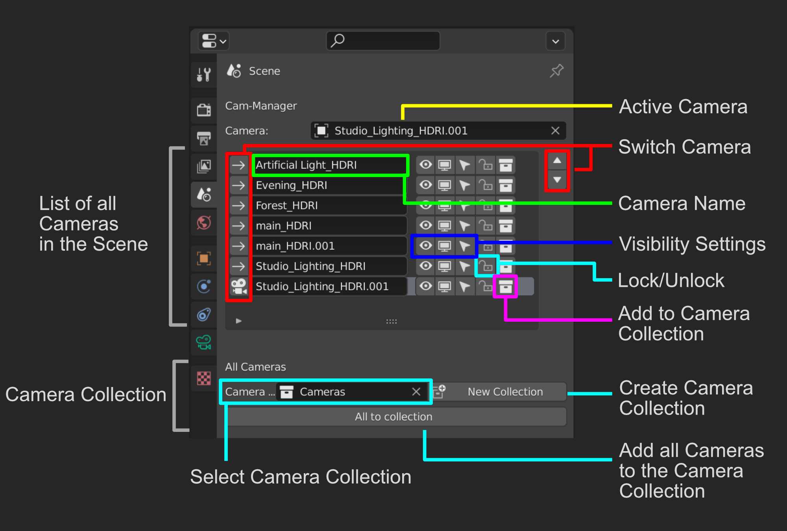

Cam-Manager Overview

Cam-Manager is an add-on to improve efficiency and organization with multiple cameras. It empowers you to quickly present your work - from product design to modeling/texturing work. It is a powerful tool to tweak the composition and framing of your artwork or when working with image planes. The addon includes different overview panels (in the 3d view and scene properties), a pie menu for quickly tweaking the active camera, different tools to assign and adjust camera-specific resolution, world materials, render slots, and more. Further, it allows you to customize the shortcuts to your needs.
Warning
This addon does not provide special tools for animation. It is designed for the workflows presented in the following pages: working with image planes, setting up the camera framing and improving composition as well as quickly presenting your work as static images.
Download and Installation
Please purchase the Cam-Manager from any of the provided stores. The addon can be installed by going to File > User Preferences > Add-ons. Click at Install from File and specify the downloaded zip file in the newly opened window. Cam-Manager should now appear in your add-ons window and can be activated. Please contact me in case you run into any issues here.

Once installed, you can use the auto-updater in the user preferences to get the latest version of the addon.

Overview Panel (Shift + C)
This is the core of the addon. The menu lists all cameras in your scene. It provides a quick overview of the most important settings and an easy way to adjusting them. Additionally - extending the default blender camera setting - you can assign camera-specific resolution, render slots, and world materials.

Features Overview:
- Toggle the active camera
- Rename cameras
- Toggle visibility, selection, and locking of cameras
- Adjust specific settings like focal length and clipping planes per camera
- Change output resolution per camera
- Copy camera resolution from the assigned background image
- Set the world material (HDRI) per camera to adjust the lighting
- Set exposure value per camera
- Move camera to the specified camera collection
- Assing individual render slots per camera
- Render any camera directly from this menu
- Set and assign to Camera Collection
- Settings: Automatically save renders and set the output folder
Scene Properties
A compacter version of the camera overview panel can be found in the scene properties panel. It allows you to rename cameras, change their visibility and locking states and assign them to the specified camera collection quickly.

Camera Pie (Alt + C)
This pie menu is intended to tweak the currently active camera. It is split into 4 areas.

Features Overview:
- Render and Background Image: Assign a render slot and render directly from the pie menu. Further, this area contains functionalities to adjust the visibility of background images and toggle them on/off quickly.
- Camera: Tweak camera-specific values like focal length, exposure, clipping planes, and depth of field.
- Viewport: Quickly show and hide composition guides, UI elements and darken the area outside the final frame.
- Quick Access: Quickly toggle between cameras, lock/unlock, select or lock the current camera to view.
Toggle Cameras (Ctrl + Shift + Left/Right Arrow)
Ctrl + Shift + Left/Right Arrow allows you to quickly toggle between the scene cameras. All camera-specific settings like resolution and world material will automatically be applied.
Warning
All camera-specific settings - provided by this addon - like world material, exposure, camera resolution and render slot will not be updated when changing the active camera in the scene properties manually. Use the hotkeys and buttons provided by the addon to switch the cameras.
 Camera toggle using hotkeys: The resolution is stored for each camera. The cameras can be toggled both from the viewport - as seen here - or while looking through the camera.
Camera toggle using hotkeys: The resolution is stored for each camera. The cameras can be toggled both from the viewport - as seen here - or while looking through the camera.
 Camera toggle using the scene properties panel.
Camera toggle using the scene properties panel.
Preferences
The preferences provide easy customization for the hotkeys. Easily adjust them to your personal needs. You can also use the auto-updater to automatically update your addon without downloading the zip files from the store pages.